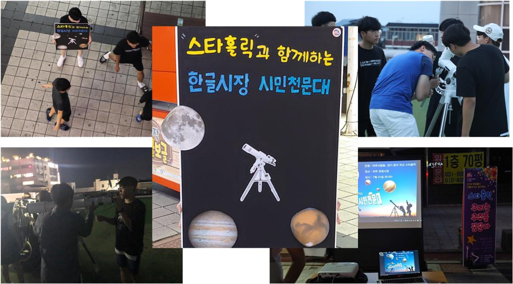

- 스타홀릭 소개
- 2018멤버
- 2019멤버
- 어떤활동
- 고등부 관측 활동 및 탐구
- 중학생 대상 "별학교" 멘토 양성 활동
- 밤샘 관측 & 번개
- 초등학교 관측 지원
- 한글 시장 천문대
- 부스
- 스타파티
- 사진
'일상에 지친 현대인들에게 한번쯤 하늘을 올려다 볼 기회를 주자'라는
생각을 시작으로 진행된 한글시장 시민천문대는
아이들에게는 꿈을
심어주고,성인들에게는 중심지에서도 별을 볼 수 있는 여유를 주고,
어르신들께는 젊었을 때 보셨던 하늘의 낭만을 드렸습니다.
